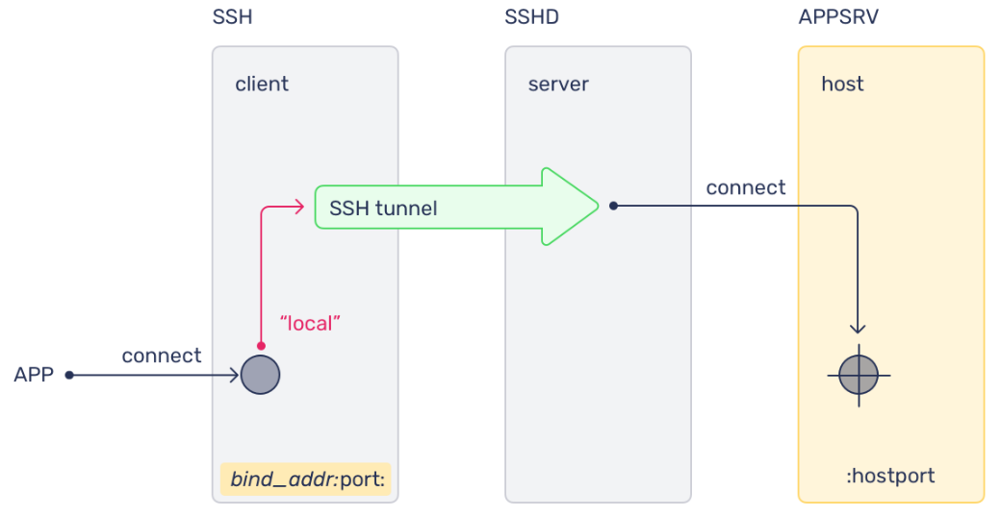
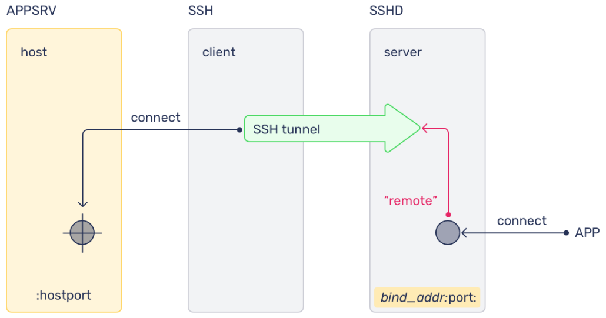

OpenSSH¶
This chapter covers OpenSSH client and server usage, key-based authentication, and common SSH workflows used in the lab.
In this chapter you will:
- review core OpenSSH concepts
- generate and manage SSH keys
- use
ssh-agent,ssh-add,ssh-copy-id, andssh-import-id - review server and client configuration files
- use local and remote port forwarding
- connect through a jump host with
ProxyJump
3.1 What Is OpenSSH?¶
OpenSSH provides secure remote shell access over an untrusted network. On Ubuntu, the SSH client is installed by default, while the server must be installed separately if you want to accept inbound SSH connections.
SSH can authenticate users with passwords, keys, or other mechanisms, but key-based authentication is the recommended default for administrative access.
# Connect to a remote host over SSH.
ssh user@remote-host
Reference output
The authenticity of host 'remote-host (...)' can't be established.
Are you sure you want to continue connecting (yes/no/[fingerprint])?
# Install the OpenSSH server package.
sudo apt install -y openssh-server
Reference output
Reading package lists... Done
Building dependency tree... Done
The following NEW packages will be installed:
openssh-server
...
Setting up openssh-server ...
Note
Ubuntu installs the OpenSSH client by default. Install openssh-server only on systems that need to accept SSH connections.
The main server configuration file is /etc/ssh/sshd_config. The client configuration file is /etc/ssh/ssh_config.
Examples¶
Make a backup of the server configuration before changing it.
# Create a backup copy of the default SSH server configuration.
sudo cp /etc/ssh/sshd_config /etc/ssh/sshd_config.factory-defaults
Reference output
No output.
# Make the backup file read-only.
sudo chmod a-w /etc/ssh/sshd_config.factory-defaults
Reference output
No output.
# Edit the SSH server configuration.
sudo nano /etc/ssh/sshd_config
Reference output
GNU nano ... /etc/ssh/sshd_config
# Restart the SSH service after saving configuration changes.
sudo systemctl restart sshd
Reference output
No output.
# Open the section 5 config-file manual for sshd_config.
man 5 sshd_config
Reference output
SSHD_CONFIG(5) File Formats Manual SSHD_CONFIG(5)
3.2 SSH Keys¶
SSH keys allow a client to prove its identity to a remote SSH server without relying on password entry for every login. A key pair consists of a private key, which stays on the client, and a public key, which is placed on the remote host.
When a compatible private key is available locally and the matching public key is present in ~/.ssh/authorized_keys on the server, SSH can authenticate without transmitting the private key over the network.
3.2.1 Key-Based SSH Logins¶
Key-based authentication is generally stronger than password authentication because private keys are harder to guess or brute-force than ordinary passwords.
Modern Ubuntu systems typically default to ed25519 for new SSH keys. RSA is still supported and may be needed for compatibility with older systems.
To use key-based SSH logins, you need to:
- create a key pair
- keep the private key secure on the client
- place the public key on the remote system
Note
Hardware-backed keys such as FIDO2 security keys can provide stronger protection for private key material when required.
3.2.2 Generating Keys¶
To keep the workflow consistent across OpenSSH versions, specify the key algorithm explicitly.
# Generate a new ed25519 SSH key pair.
ssh-keygen -t ed25519
Reference output
Generating public/private ed25519 key pair.
Enter file in which to save the key (/home/ubuntu/.ssh/id_ed25519):
This chapter uses ed25519 in the lab steps. If you need an RSA key explicitly, generate one with -t rsa.
# Generate a new RSA SSH key pair.
ssh-keygen -t rsa
Reference output
Generating public/private rsa key pair.
Enter file in which to save the key (/home/ubuntu/.ssh/id_rsa):
Copy the public key to a remote server with ssh-copy-id.
# Install your local public key on a remote host.
ssh-copy-id username@remotehost
Reference output
/usr/bin/ssh-copy-id: INFO: Source of key(s) to be installed: ...
Number of key(s) added: 1
Use verbose mode when troubleshooting authentication.
# Show verbose SSH connection and key-selection details.
ssh -v username@remotehost
Reference output
debug1: Reading configuration data /home/ubuntu/.ssh/config
debug1: Offering public key: /home/ubuntu/.ssh/id_ed25519
Representative verbose output often includes lines like these:
debug1: Offering public key: /home/user/.ssh/id_ed25519
debug1: Offering public key: /home/user/.ssh/id_rsa
debug1: Server accepts key: pkalg ssh-ed25519
Takeaway
The key-based login model is:
- the private key stays on the client
- the public key is installed on the server
ssh -vhelps you see which keys SSH is actually trying
3.3 SSH Tools¶
3.3.1 ssh-agent¶
ssh-agent keeps decrypted private keys in memory for the current session so SSH clients can reuse them without repeatedly prompting for the passphrase.
On Ubuntu desktop systems, ssh-agent is often started automatically as part of the graphical session. On headless systems and terminal-only sessions, you may need to start it manually.
# Add the default ed25519 key to the running SSH agent.
ssh-add ~/.ssh/id_ed25519
Reference output
Enter passphrase for /home/ubuntu/.ssh/id_ed25519:
Identity added: /home/ubuntu/.ssh/id_ed25519 (...)
# List identities currently held by the SSH agent.
ssh-add -l
Reference output
256 SHA256:... /home/ubuntu/.ssh/id_ed25519 (ED25519)
By default, ssh-add looks for these common private key file names:
~/.ssh/id_rsa
~/.ssh/id_dsa
~/.ssh/id_ecdsa
~/.ssh/id_ed25519
~/.ssh/identity
You can also start the agent manually in a shell session.
# Start a new SSH agent for the current shell.
eval $(ssh-agent)
Reference output
Agent pid 12345
# Add the default private key to the newly started agent.
ssh-add
Reference output
Identity added: /home/ubuntu/.ssh/id_ed25519 (...)
# Confirm that the agent is holding at least one identity.
ssh-add -l
Reference output
256 SHA256:... /home/ubuntu/.ssh/id_ed25519 (ED25519)
# Remove all identities from the SSH agent.
ssh-add -D
Reference output
All identities removed.
3.3.2 Importing And Copying SSH Keys¶
Ubuntu includes tools that help move public keys into place quickly.
ssh-copy-id copies a local public key to a remote server. ssh-import-id imports public keys from supported identity providers such as GitHub and Launchpad into the local authorized_keys file.
# Import public keys published on GitHub.
ssh-import-id gh:your-github-username
Reference output
2026-... INFO Importing 1 key(s) from gh:your-github-username
# Import public keys published on Launchpad.
ssh-import-id lp:your-launchpad-username
Reference output
2026-... INFO Importing 1 key(s) from lp:your-launchpad-username
Note
ssh-import-id is useful in automated provisioning flows, including cloud-init based setups.
3.3.3 Using rsync With ssh¶
rsync can use SSH as its transport so file transfers are encrypted in transit.
# Copy a file from a remote host to the local system over SSH.
rsync -azvPe ssh user@10.10.10.10:/path-to/file.txt /tmp/
Reference output
receiving incremental file list
file.txt
# Copy a local file to a remote host over SSH.
rsync -azvPe ssh file.txt user@10.10.10.10:/pathto/backups/
Reference output
sending incremental file list
file.txt
Takeaway
These SSH helpers solve different problems:
ssh-agentkeeps decrypted keys in memoryssh-copy-idinstalls your public key on a remote hostssh-import-idpulls published public keys intoauthorized_keysrsync -e sshcopies files securely over SSH
3.4 OpenSSH Server Configuration¶
The main SSH server configuration file on Ubuntu is:
/etc/ssh/sshd_config
This file controls server behavior such as authentication methods, login rules, and network binding. Do not confuse it with /etc/ssh/ssh_config, which affects client behavior.
By default, the SSH server listens on port 22, but the listening port can be changed when needed.
Port 2222
3.4.1 SSH Hardening Recommendations¶
These settings are common hardening examples for sshd_config.
Limit which users can log in:
AllowUsers alice bob
Disable direct root login:
PermitRootLogin no
Require keys instead of passwords:
PasswordAuthentication no
Reject empty passwords explicitly:
PermitEmptyPasswords no
Restrict the interfaces or addresses the server listens on:
ListenAddress 192.168.1.100
Always test SSH changes carefully before closing your current session.
# Restart the SSH service after validating configuration changes.
sudo systemctl restart ssh
Reference output
No output.
Warning
Keep a second terminal open while testing SSH configuration changes. A bad sshd_config change can lock you out of a remote system.
3.5 SSH Client Configuration Files¶
SSH supports both per-user and system-wide client configuration files.
- user configuration:
~/.ssh/config - system configuration:
/etc/ssh/ssh_config
These files let you define reusable connection settings such as host aliases, usernames, ports, and identity files.
Example user configuration:
Host labvm
HostName 192.168.101.50
User ubuntu
With that entry, this command:
# Connect using a host alias defined in ~/.ssh/config.
ssh labvm
Reference output
Welcome to Ubuntu 24.04 LTS ...
ubuntu@ubuntu:~$
is equivalent to:
# Connect directly without using the SSH host alias.
ssh ubuntu@192.168.101.50
Reference output
Welcome to Ubuntu 24.04 LTS ...
ubuntu@ubuntu:~$
Note
Use an explicit username or set User ubuntu in ~/.ssh/config when you want ssh labvm to land on the ubuntu account consistently.
3.5.1 Typical Use Cases¶
You can add more options when the target host needs custom settings.
Use a different username:
User myadmin
Use a non-default private key:
IdentityFile ~/.ssh/id_custom
Use a non-standard port:
Port 2222
Takeaway
Keep the config split clear:
- server settings live in
/etc/ssh/sshd_config - client settings live in
/etc/ssh/ssh_configor~/.ssh/config - test server-side changes carefully so you do not lock yourself out
~/.ssh/config is useful because it lets you save:
- host aliases
- usernames
- ports
- identity files
3.6 Port Forwarding¶
3.6.1 Local Port Forwarding¶
Local port forwarding exposes a remote service on a local client port through an SSH tunnel.

# Forward a local port to a remote service through an SSH server.
ssh -L local_port:remote_address:remote_port username@ssh_server
Reference output
The SSH session stays open while the tunnel is active.
This is useful when a remote service is reachable from the SSH server but not directly from your current machine.
3.6.2 Remote Port Forwarding¶
Remote port forwarding exposes a local service on a remote system through an SSH tunnel.

# Expose a local service on a port on the remote SSH server.
ssh -R remote_port:remote_address:local_port username@ssh_server
Reference output
The SSH session stays open while the tunnel is active.
This can be useful when a service on your local machine needs to be reached from the remote side for testing or controlled access.
3.6.3 SSH Jump Hosts And ProxyJump¶
When a target host is not directly reachable, SSH can connect through an intermediate jump host with -J.
# Connect to an internal host through a jump host.
ssh -J ubuntu@LABVM ubuntu@INTERNALVM
Reference output
Welcome to Ubuntu 24.04 LTS ...
ubuntu@internalvm:~$
You can define the same behavior in ~/.ssh/config.
Host internalvm
HostName 192.168.100.50
User ubuntu
ProxyJump ubuntu@192.168.101.50
Then connect with the alias:
# Connect to the internal host using the configured alias.
ssh internalvm
Reference output
Welcome to Ubuntu 24.04 LTS ...
ubuntu@internalvm:~$
Note
ProxyJump is the preferred modern replacement for older ProxyCommand based jump-host setups.
Takeaway
The three SSH tunnel patterns to remember are:
ssh -Lexposes a remote service on your local machinessh -Rexposes a local service on the remote machinessh -Jreaches a target through a jump host
3.7 SSH Lab¶
In this lab you will use OpenSSH from the course lab environment.
LABHOST: the assigned lab host that the student logs in toLABVM: the virtual machine created earlier in the courseINTERNALVM: an internal VM reachable fromLABVM
Info
Start this lab on LABHOST unless a step explicitly says otherwise.
3.7.1 SSH Key Generation¶
Info
This exercise establishes the SSH variables and key pair used throughout the rest of the chapter. Success means the three lab IP variables are available in your shell and ~/.ssh/ contains the generated private and public key files.
Step 1: Define the lab IP variables used throughout the chapter.
Note
These variables are persisted in ~/.bashrc for later use. If you rerun this step, avoid appending duplicate variable definitions.
# Export the lab IP variables for the current shell.
export LABHOSTIP=192.168.101.1
Expected result
No output.
# Export the LABVM IP for the current shell.
export LABVMIP=192.168.101.50
Expected result
No output.
# Export the INTERNALVM IP for the current shell.
export INTERNALVMIP=192.168.122.51
Expected result
No output.
# Persist the LABHOST IP in ~/.bashrc.
printf 'LABHOSTIP=192.168.101.1\n' >> ~/.bashrc
Expected result
No output.
# Persist the LABVM IP in ~/.bashrc.
printf 'LABVMIP=192.168.101.50\n' >> ~/.bashrc
Expected result
No output.
# Persist the INTERNALVM IP in ~/.bashrc.
printf 'INTERNALVMIP=192.168.122.51\n' >> ~/.bashrc
Expected result
No output.
# Ensure the USER variable is set to ubuntu for this lab.
export USER=ubuntu
Expected result
No output.
Step 2: Generate the local SSH key pair.
# Generate an ed25519 SSH key pair on LABHOST.
ssh-keygen -t ed25519
Expected result
Generating public/private ed25519 key pair.
Enter file in which to save the key (/home/ubuntu/.ssh/id_ed25519):
Enter passphrase (empty for no passphrase):
Enter same passphrase again:
Your identification has been saved in /home/ubuntu/.ssh/id_ed25519
Your public key has been saved in /home/ubuntu/.ssh/id_ed25519.pub
Note
Use the default options by pressing Enter at each prompt unless you need a custom location or passphrase.
Step 3: List the generated SSH files.
# List the contents of ~/.ssh after key generation.
ls -al ~/.ssh/
Expected result
total 28
drwx------ 2 ubuntu ubuntu ... .
drwxr-x--- 5 ubuntu ubuntu ... ..
-rw------- 1 ubuntu ubuntu ... authorized_keys
-rw------- 1 ubuntu ubuntu ... id_ed25519
-rw-r--r-- 1 ubuntu ubuntu ... id_ed25519.pub
-rw------- 1 ubuntu ubuntu ... known_hosts
3.7.2 sshd, ssh-agent, ssh-add, and ssh-copy-id¶
ssh-add loads private keys into the running agent. ssh-copy-id installs a local public key on a remote server.
Info
This exercise proves that the generated key can log in to LABVM and shows how ssh-agent manages the private key in memory. Success means ssh-copy-id installs the key, ssh $LABVMIP logs in without asking for the ubuntu password, and ssh-add -l lists the loaded identity.
Step 1: Copy the local public key to LABVM.
# Copy your public key to the ubuntu account on LABVM.
ssh-copy-id ubuntu@$LABVMIP
Expected result
/usr/bin/ssh-copy-id: INFO: Source of key(s) to be installed: "/home/ubuntu/.ssh/id_ed25519.pub"
/usr/bin/ssh-copy-id: INFO: attempting to log in with the new key(s), to filter out any that are already installed
Number of key(s) added: 1
Note
In this lab, the ubuntu password on LABVM is ubuntu if password authentication is still required for the initial copy.
Step 2: Confirm that key-based login works.
# Connect to LABVM using SSH after copying the key.
ssh $LABVMIP
Expected result
Welcome to Ubuntu 24.04 LTS ...
ubuntu@ubuntu:~$
Note
You can also install the public key manually by appending ~/.ssh/id_ed25519.pub or ~/.ssh/id_rsa.pub to ~/.ssh/authorized_keys on LABVM.
Step 3: Return to LABHOST.
# Exit the SSH session back to LABHOST.
exit
Expected result
logout
Connection to 192.168.101.50 closed.
Step 4: Check whether the SSH server is running.
# Show the current SSH service status.
systemctl status ssh
Expected result
● ssh.service - OpenBSD Secure Shell server
Loaded: loaded (/usr/lib/systemd/system/ssh.service; disabled; preset: enabled)
Active: active (running)
Note
On some Ubuntu systems, SSH is activated through ssh.socket. In that case, systemctl status ssh can still show the server as running even when the unit itself is listed as disabled.
Step 5: Check whether ssh-agent is already running.
# Check for a running ssh-agent process.
ps -el | grep ssh-agent
Expected result
No output.
Step 6: Start ssh-agent manually if it is not already running.
# Start a new ssh-agent for the current shell session.
eval $(ssh-agent)
Expected result
Agent pid 12345
Note
On Ubuntu desktop systems, ssh-agent is usually started automatically. Manual startup is more common on headless systems, VMs, and terminal-only sessions.
Note
If you open a new shell later, you may need to start ssh-agent again and reload your key in that shell.
Step 7: Add the private key to the agent.
# Add the generated SSH key to the running ssh-agent.
ssh-add ~/.ssh/id_ed25519
Expected result
Identity added: /home/ubuntu/.ssh/id_ed25519 (ubuntu@playground-rdu)
Note
This lab generates id_ed25519 explicitly, so the later ssh-add step always loads the same key type.
Step 8: List the loaded keys.
# List identities currently available through ssh-agent.
ssh-add -l
Expected result
256 SHA256:3rNMyyHgbnx9g0E7+JlTEazQ4KOF2XqjQNeG+o69Dks ubuntu@playground-rdu (ED25519)
Takeaway
The practical key-based workflow is:
- generate a key pair with
ssh-keygen -t ed25519 - install the public key with
ssh-copy-id - load the private key into
ssh-agentwithssh-addwhen needed
3.7.3 Using SSH User Configuration To Connect With A Custom Identity¶
SSH client configuration can store reusable connection settings, including a host alias, username, and a specific private key.
Info
This exercise creates a second user on LABVM, assigns a separate SSH key to that user, and stores the connection details in ~/.ssh/config. Success means ssh labvm connects you to LABVM as myadmin using ~/.ssh/id_custom.
Step 1: Connect to LABVM.
# Connect to LABVM before creating the new user.
ssh $LABVMIP
Expected result
Welcome to Ubuntu 24.04 LTS ...
ubuntu@ubuntu:~$
Step 2: On LABVM, create a new user.
# Create the myadmin user on LABVM.
sudo adduser myadmin
Expected result
New password:
Retype new password:
info: Adding user `myadmin' ...
info: Adding new group `myadmin' ...
info: Creating home directory `/home/myadmin' ...
Note
Set a password you know for myadmin. The first ssh-copy-id into that account uses this password before key-based login is available.
Step 3: Optionally add the user to sudo.
# Add myadmin to the sudo group.
sudo usermod -aG sudo myadmin
Expected result
No output.
Step 4: Return to LABHOST.
# Exit the SSH session back to LABHOST.
exit
Expected result
logout
Connection to 192.168.101.50 closed.
Step 5: On LABHOST, generate a second key pair for the custom identity.
# Generate a dedicated ed25519 key pair for the custom SSH alias.
ssh-keygen -t ed25519 -f ~/.ssh/id_custom
Expected result
Generating public/private ed25519 key pair.
Enter passphrase (empty for no passphrase):
Step 6: Copy the custom public key to the new user on LABVM.
# Install the custom public key for myadmin on LABVM.
ssh-copy-id -i ~/.ssh/id_custom.pub myadmin@$LABVMIP
Expected result
Number of key(s) added: 1
Note
When prompted, use the myadmin password you set in Step 2.
Step 7: Create the SSH client config file if it does not exist yet.
# Create ~/.ssh/config if it does not already exist.
touch ~/.ssh/config
Expected result
No output.
# Restrict the SSH config file permissions.
chmod 600 ~/.ssh/config
Expected result
No output.
Step 8: Add the host alias configuration.
# Append a labvm host alias that uses the custom identity.
tee -a ~/.ssh/config <<'EOF'
Host labvm
HostName 192.168.101.50
User myadmin
IdentityFile ~/.ssh/id_custom
EOF
Expected result
Host labvm
HostName 192.168.101.50
User myadmin
IdentityFile ~/.ssh/id_custom
Step 9: Connect with the alias.
# Connect to LABVM as myadmin using the SSH alias.
ssh labvm
Expected result
Welcome to Ubuntu 24.04 LTS ...
myadmin@ubuntu:~$
Step 10: Exit back to LABHOST.
# Exit the SSH session back to LABHOST.
exit
Expected result
logout
Connection to 192.168.101.50 closed.
Takeaway
A host alias in ~/.ssh/config can bundle:
- the destination host
- the username
- the private key to use
Then you can connect with a short command such as ssh labvm.
3.7.4 Local Port Forwarding Lab¶
This lab forwards traffic from LABHOST through LABVM to www.ubuntu.com.
Info
This exercise demonstrates local port forwarding. Success means a service reached through https://127.0.0.1 on LABHOST is actually being fetched through the SSH tunnel on LABVM.
How traffic flows
- The SSH tunnel is created between
LABHOSTandLABVM. - Your browser opens
https://127.0.0.1:443onLABHOST. - SSH forwards that traffic through the tunnel to
LABVM. LABVMreacheswww.ubuntu.com:443and returns the response back through the tunnel.
Note
Binding to privileged ports up to 1024 requires sudo.
Step 1: On LABHOST, create the tunnel to LABVM using local port 443.
# Forward local port 443 through LABVM to www.ubuntu.com:443.
sudo ssh -L 443:www.ubuntu.com:443 ubuntu@$LABVMIP
Expected result
The SSH session stays open while the tunnel is active.
Note
Because sudo ssh runs as root, it may not use the same SSH keys as your normal user. If that happens, authenticate with the ubuntu password on LABVM, or use an unprivileged local port such as 9000 without sudo.
Step 2: In another terminal on LABHOST, install elinks.
# Install a text browser for tunnel verification.
sudo apt install -y elinks
Expected result
Reading package lists... Done
...
Setting up elinks ...
Step 3: Test the forwarded connection locally.
# Open the forwarded HTTPS endpoint through the local tunnel.
elinks https://127.0.0.1:443
Expected result
A CTO's guide to real-time Linux
Ubuntu 24.04 LTS Noble Numbat is available for download
Note
Exit elinks with q.
Note
If you only want to print the page content without opening the interactive browser interface, you can use elinks -dump https://127.0.0.1:443.
Step 4: Close the first SSH tunnel and recreate it on port 9000.
# Close the current SSH tunnel.
exit
Expected result
logout
# Forward local port 9000 through LABVM to www.ubuntu.com:443.
sudo ssh -L 9000:www.ubuntu.com:443 ubuntu@$LABVMIP
Expected result
The SSH session stays open while the tunnel is active.
Step 5: Test the new forwarded port.
# Open the forwarded HTTPS endpoint on local port 9000.
elinks https://127.0.0.1:9000
Expected result
Ubuntu | The latest version of Ubuntu is here
Step 6: Close the SSH tunnel.
# Exit the SSH session and close the tunnel.
exit
Expected result
logout
Takeaway
Local forwarding means:
- you open a port on your local machine
- SSH carries that traffic through the tunnel
- the SSH server reaches the final remote service
3.7.5 Remote Port Forwarding Lab¶
This lab exposes a service running on LABHOST to LABVM through an SSH remote port forward.
Info
This exercise demonstrates remote port forwarding. Success means curl http://localhost:8080/test.txt on LABVM returns LABHOST, proving the request reached the Apache service running on LABHOST through the SSH tunnel.
How traffic flows
- The SSH tunnel is created between
LABHOSTandLABVM. LABHOSTexposes its local web service on port8080.- SSH makes that service reachable on
LABVMatlocalhost:8080. - A request from
LABVMtohttp://localhost:8080/test.txtis carried back through the tunnel toLABHOST, and the response returns the same way.
Step 1: Install apache2 on LABHOST.
# Install Apache on LABHOST.
sudo apt install -y apache2
Expected result
Reading package lists... Done
...
Setting up apache2 ...
Step 2: Move to the web root.
# Change to Apache's default document root.
cd /var/www/html
Expected result
No output.
Step 3: Create the test file.
# Create the test file used for remote forwarding verification.
sudo touch test.txt
Expected result
No output.
# Write LABHOST into the test file.
sudo sh -c 'echo LABHOST > /var/www/html/test.txt'
Expected result
No output.
Step 4: Change Apache to listen on port 8080.
# Update Apache's listen port from 80 to 8080.
sudo sed -i 's/80/8080/' /etc/apache2/ports.conf
Expected result
No output.
# Restart Apache after changing the listening port.
sudo systemctl restart apache2
Expected result
No output.
Step 5: Open a remote forward from LABHOST to LABVM.
# Expose LABHOST localhost:8080 on LABVM port 8080.
sudo ssh -R 8080:localhost:8080 ubuntu@$LABVMIP
Expected result
The SSH session stays open while the tunnel is active.
Note
Leave this SSH session open. The next steps use a second terminal to connect to LABVM while the remote forward remains active.
Step 6: In another terminal on LABHOST, connect to LABVM.
# Open a second SSH session to LABVM for tunnel verification.
ssh $LABVMIP
Expected result
Welcome to Ubuntu 24.04 LTS ...
ubuntu@ubuntu:~$
Step 7: On LABVM, install the tools needed to test the forwarded endpoint.
# Install curl and net-tools on LABVM.
sudo apt install -y curl net-tools
Expected result
Reading package lists... Done
...
curl is already the newest version (...).
Setting up net-tools (...)
Step 8: Fetch the test page from the forwarded port.
# Request the test page through the remote forward on LABVM.
curl -v http://localhost:8080/test.txt
Expected result
> GET /test.txt HTTP/1.1
< HTTP/1.1 200 OK
< Server: Apache/2.4.58 (Ubuntu)
LABHOST
Step 9: Exit the verification session back to LABHOST.
# Leave the LABVM verification session.
exit
Expected result
logout
Connection to 192.168.101.50 closed.
Step 10: In the original terminal, close the SSH tunnel and return to the home directory on LABHOST.
# Exit the SSH session that is holding the remote port forward.
exit
Expected result
logout
# Return to the ubuntu home directory.
cd ~
Expected result
No output.
Takeaway
Remote forwarding means:
- a service on your local machine is published on the remote side
- the remote host connects to its own forwarded port
- SSH carries those requests back to your local service
3.7.6 SSH Jump Host Access With ProxyJump¶
This lab simulates access to an internal VM through LABVM as a jump host.
Info
Use one terminal to LABVM for the VM-creation steps in this exercise, then return to LABHOST for the final ProxyJump tests. Success means LABVM can reach INTERNALVM directly and LABHOST can reach the same VM only through ssh -J.
How traffic flows
INTERNALVMruns on a private libvirt network insideLABVM.LABVMcan reachINTERNALVMdirectly on that private network.LABHOSTcan reachLABVM, but notINTERNALVMdirectly.ssh -JusesLABVMas the jump host to carry the SSH connection fromLABHOSTtoINTERNALVM.
Note
Even if LABHOST can reach INTERNALVM directly in your environment, this exercise assumes access is only allowed through LABVM.
Note
In this lab, INTERNALVM uses 192.168.122.51 on the libvirt default network inside LABVM. That address matches $INTERNALVMIP from the earlier variable setup step.
Note
In this section, the prepared VM files must be stored under /var/lib/libvirt/images/ and virt-install must use --connect qemu:///system so the system libvirt daemon can access them.
Note
If LABVM does not already have a suitable base image and cloud-init-internal.iso, create them there before running virt-install.
If you are not already on LABVM, connect now and keep that terminal open for the VM-creation and cleanup steps in this exercise.
Use a separate LABHOST terminal for the steps explicitly labeled On LABHOST so you do not lose your place on LABVM.
# Connect to LABVM for the internal VM setup steps.
ssh $LABVMIP
Expected result
Welcome to Ubuntu 24.04 LTS ...
ubuntu@ubuntu:~$
Step 1: On LABVM, install the tools needed to create INTERNALVM.
# Install the virtualization and cloud-image tools on LABVM.
sudo apt install -y qemu-system libvirt-daemon-system virtinst cloud-image-utils
Expected result
Reading package lists... Done
...
Setting up virtinst ...
Setting up cloud-image-utils ...
Step 2: If LABVM is low on disk space, expand its root disk before continuing.
Note
Run these commands only if df -h / on LABVM shows that the root filesystem is too full to hold the base image and internalvm.img.
# On LABHOST, increase LABVM's primary disk.
sudo virsh blockresize ubuntu vda 32G
Expected result
Block device 'vda' is resized
# On LABVM, grow partition 1 to use the larger disk.
sudo growpart /dev/vda 1
Expected result
CHANGED: partition=1 ...
# On LABVM, grow the ext4 filesystem.
sudo resize2fs /dev/vda1
Expected result
The filesystem on /dev/vda1 is now ... blocks long.
# On LABVM, confirm the root filesystem now has free space.
df -h /
Expected result
Filesystem Size Used Avail Use% Mounted on
/dev/vda1 30G 17G 14G 57% /
Step 3: On LABHOST, copy the internal cloud-init source files to LABVM.
# Copy the internal VM cloud-init source files to LABVM.
scp /home/ubuntu/user-data-internal /home/ubuntu/meta-data-internal ubuntu@$LABVMIP:/home/ubuntu/
Expected result
user-data-internal 100% ...
meta-data-internal 100% ...
The transfer output can vary, but both files should copy successfully to /home/ubuntu/ on LABVM.
Step 4: On LABVM, prepare the internal VM disk and cloud-init ISO.
# Download a fresh Ubuntu cloud image on LABVM.
curl -L -o /home/ubuntu/noble-server-cloudimg-amd64.img https://cloud-images.ubuntu.com/noble/current/noble-server-cloudimg-amd64.img
Expected result
100 600M 100 600M 0 0 ...
# Create the internal VM disk from the downloaded cloud image.
cp /home/ubuntu/noble-server-cloudimg-amd64.img /home/ubuntu/internalvm.img
Expected result
No output.
# Write the nested-network configuration for INTERNALVM.
tee /home/ubuntu/network-config-internal <<'EOF'
version: 2
ethernets:
enp1s0:
addresses:
- 192.168.122.51/24
routes:
- to: default
via: 192.168.122.1
nameservers:
addresses:
- 8.8.8.8
- 1.1.1.1
EOF
Expected result
version: 2
ethernets:
enp1s0:
addresses:
- 192.168.122.51/24
...
# Build the internal cloud-init ISO.
cloud-localds -N /home/ubuntu/network-config-internal /home/ubuntu/cloud-init-internal.iso /home/ubuntu/user-data-internal /home/ubuntu/meta-data-internal
Expected result
No output.
# Create the libvirt image directory if needed.
sudo mkdir -p /var/lib/libvirt/images
Expected result
No output.
# Move the prepared VM disk and ISO into libvirt storage.
sudo mv /home/ubuntu/internalvm.img /home/ubuntu/cloud-init-internal.iso /var/lib/libvirt/images/
Expected result
No output.
Step 5: Create the internal VM.
# Create the internal VM attached to the internal libvirt network.
sudo virt-install --connect qemu:///system \
--name internalvm \
--ram 1024 \
--vcpus 1 \
--disk path=/var/lib/libvirt/images/internalvm.img,format=qcow2,bus=virtio \
--disk path=/var/lib/libvirt/images/cloud-init-internal.iso,device=cdrom \
--os-variant ubuntu24.04 \
--network network=default,model=virtio \
--graphics none \
--console pty,target_type=serial \
--import \
--noautoconsole
Expected result
Starting install...
Domain creation completed.
Note
Wait for the VM to boot and cloud-init to finish before testing SSH access.
Note
virt-install may warn that 1024 MiB is lower than the recommended memory for ubuntu24.04. That warning is expected in this lab and the VM can still be created successfully.
Step 6: From LABVM, confirm that INTERNALVM responds on the expected address.
# Ping INTERNALVM on the nested libvirt network.
ping -c 2 $INTERNALVMIP
Expected result
64 bytes from 192.168.122.51: icmp_seq=1 ttl=64 time=...
64 bytes from 192.168.122.51: icmp_seq=2 ttl=64 time=...
Note
If the ping fails immediately after virt-install, wait a little longer and try again. INTERNALVM may still be finishing cloud-init.
Step 7: From LABVM, confirm direct SSH access to INTERNALVM.
# Connect from LABVM to INTERNALVM.
ssh ubuntu@$INTERNALVMIP
Expected result
Welcome to Ubuntu 24.04 LTS ...
ubuntu@internalvm:~$
Note
In this lab, the ubuntu password on INTERNALVM is ubuntu if password authentication is still required.
Note
The first SSH connection to INTERNALVM may also ask you to confirm the host key before the login prompt appears.
After you confirm the login works, run exit to return to LABVM. If that LABVM shell was itself opened from LABHOST, run exit there as well so you are back on LABHOST before the next step.
Step 8: From LABHOST, connect to INTERNALVM through LABVM with ProxyJump.
# Connect to INTERNALVM through LABVM as a jump host.
ssh -J ubuntu@$LABVMIP ubuntu@$INTERNALVMIP
Expected result
Welcome to Ubuntu 24.04 LTS ...
ubuntu@internalvm:~$
Step 9: Optionally add a reusable SSH alias for the jump configuration.
# Append an SSH alias that connects to INTERNALVM through LABVM.
tee -a ~/.ssh/config <<EOF
Host internalvm
HostName $INTERNALVMIP
User ubuntu
ProxyJump ubuntu@$LABVMIP
EOF
Expected result
Host internalvm
HostName 192.168.122.51
User ubuntu
ProxyJump ubuntu@192.168.101.50
# Restrict the SSH config file permissions after editing it.
chmod 600 ~/.ssh/config
Expected result
No output.
Step 10: Connect using the shortcut.
# Connect to INTERNALVM using the SSH alias.
ssh internalvm
Expected result
Welcome to Ubuntu 24.04 LTS ...
ubuntu@internalvm:~$
Step 11: Exit back to LABHOST.
# Exit the SSH session back to LABHOST.
exit
Expected result
logout
Connection to 192.168.122.51 closed.
Step 12: On LABVM, stop INTERNALVM during cleanup.
Note
Use the LABVM terminal you kept open earlier for this cleanup step, or reconnect to LABVM first if needed.
# Stop the nested libvirt VM when the jump-host exercise is complete.
virsh destroy internalvm
Expected result
Domain 'internalvm' destroyed
Takeaway
ProxyJump is for segmented networks:
- you can reach the jump host directly
- the jump host can reach the internal target
- SSH stitches the path together with one command